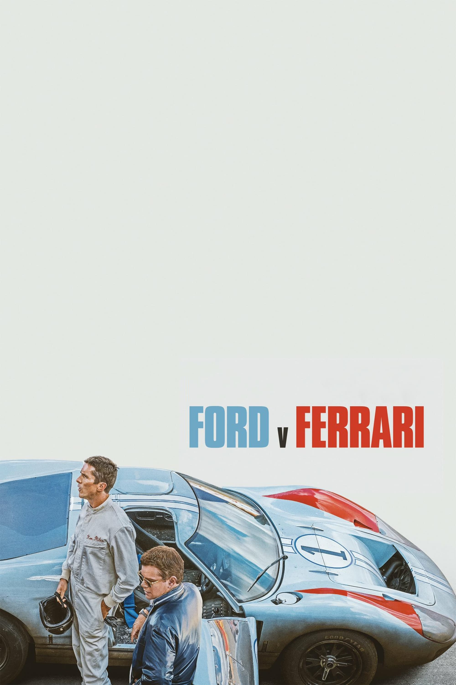
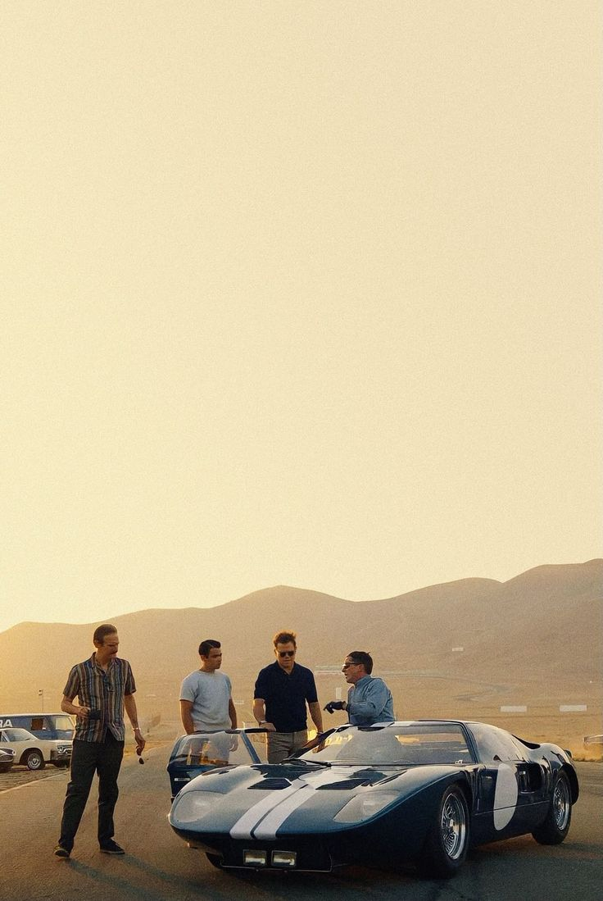
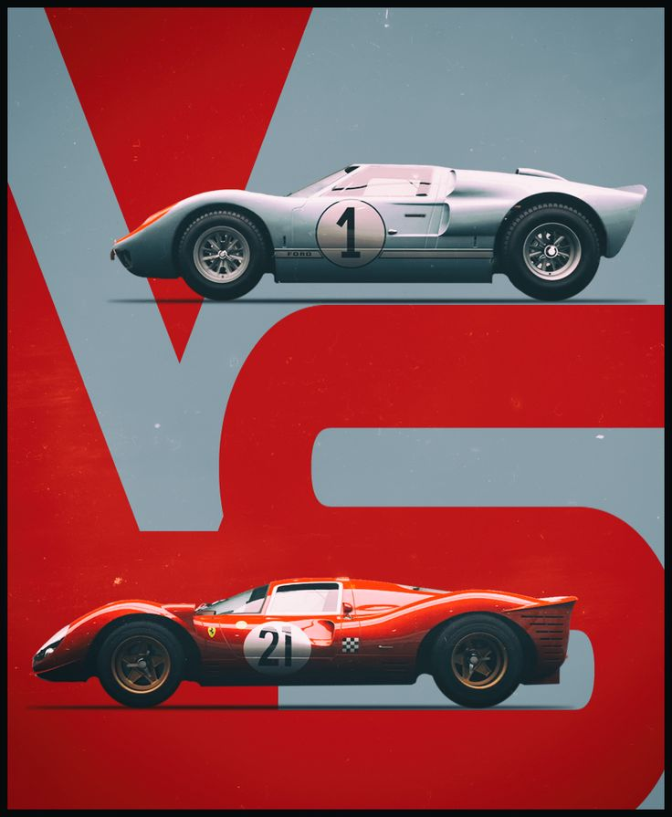

Action, Biography, Drama
2019
152 minutes
James Mangold
Ford v Ferrari tells the true story of visionary automotive designer Carroll Shelby and fearless British driver Ken Miles as they build a revolutionary race car for Ford. Facing corporate pressure and fierce competition from Ferrari, the team races to challenge the legendary Italian manufacturer at the 1966 24 Hours of Le Mans.